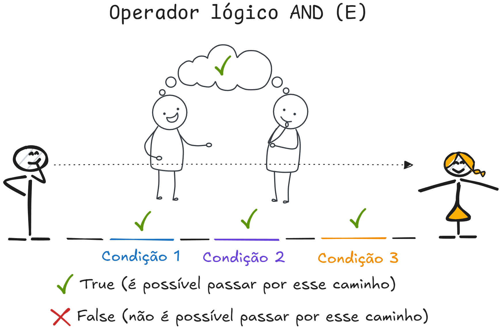

Estrutura condicional#
Imagine que você está planejando um piquenique. Antes de sair de casa, você provavelmente verifica o tempo. Se estiver ensolarado, você vai ao parque e não leva guarda-chuvas. Se estiver chovendo, ou você vai ao parque e leva guarda-chuvas ou você fica em casa. Essa é uma estrutura de decisão simples que usamos todos os dias.
Em programação, especialmente em Python, usamos estruturas semelhantes para fazer nossos programas tomarem decisões. Essas estruturas são chamadas de estruturas de decisão ou estruturas condicionais.
Neste capítulo, vamos aprender como fazer o computador tomar decisões usando Python. Vamos explorar:
A estrutura básica
if(se)Como adicionar alternativas com
else(senão)Múltiplas condições com
elif(senão se)
Não se preocupe se esses termos parecerem estranhos agora. Vamos explicar cada um deles com exemplos simples e práticos que qualquer pessoa pode entender, mesmo sem experiência prévia com esse tipo de estrutura em programação.
O que é uma condição?#
Antes de irmos direto para o código, é importante entendermos o conceito de condição em programação.
Imagine que você está em uma loja de sorvetes. Antes de fazer seu pedido, você provavelmente se pergunta: “tenho dinheiro suficiente?”. A resposta a essa pergunta só pode ser sim ou não. Em programação, chamamos esse tipo de pergunta de condição, na qual só há duas possíveis respostas, sejam elas quais forem (0 ou 1, sim ou não, contém e não contém, possui e não possui, vai ou não vai, etc.).
Uma condição em Python é qualquer coisa, literalmente, que pode ser avaliada como verdadeira (True) ou falsa (False). Essas duas únicas opções de resposta são chamadas de valores booleanos.
Ao longo do livro já vimos alguns métodos, funções e operações que retornam valores booleanos. Vamos recordar algumas?
Há vários métodos e operações de strings que podem ser usados como condicional. Qualquer método que de string de verificação que comece por str.is...() é uma condicional:
nome = "Henrique"
print(nome.isupper())
print(nome.islower())
print(nome.isdigit())
print(nome.istitle())
False
False
False
True
Qualquer operação de continência com in ou not in, seja em strings, listas, sets ou dicionário, também podem ser condicionais:
nome = "Henrique"
print("H" in nome)
salarios = [5000, 5500, 6000, 6300]
print(5600 not in salarios)
preco_produtos = {"A": 200, "B": 300, "C": 500, "D": 50}
print("D" in preco_produtos)
True
True
True
Todas as comparações (igualdade, maior, menor, diferente) também são condicionais:
Nota (operadores de comparação)
Os operadores de comparação são maior (>), maior-igual (>=), menor (<), menor-igual (<=), diferente (!=), igual (==). Reparem que o operador de comparação de igualdade (==) são *dois sinais de igual*. Não confundir com o operador de atribuição de valores (=`).
Repetindo: dois sinais de igual (==) é comparação; um sinal de igual (=) é atribuição.
idade = 18
print(idade > 18)
print(idade != 18)
print(idade == 18)
False
False
True
Mantenha isso em mente: qualquer coisa (métodos, funções, variáveis, classes, operações) que retorne True ou False são considerados condicionais.
Agora que entendemos o conceito do que é uma condição, vamos aprender mais sobre as estruturas condicionais.
Sintáxe básica da estrutura condicional#
A estrutura condicional mais simples em Python é a instrução if. Podemos imaginá-la como uma forma de dar ao programa a capacidade de tomar decisões: “se uma determinada condição for verdadeira, execute um bloco de código; caso contrário, siga em frente sem fazer nada.”
A sintaxe básica de uma estrutura condicional if em Python é simples e direta:
idade = 18
if idade >= 18:
print("Você é maior de idade.")
Você é maior de idade.
No exemplo acima, a condição idade >= 18 é uma expressão que o Python avalia como True (verdadeira) ou False (falsa). Aqui, estamos comparando a variável idade com o valor 18 usando o operador de comparação >= (maior ou igual). Se a expressão for avaliada como True, o bloco de código indentado abaixo da instrução if será executado, e a mensagem “Você é maior de idade.” será impressa na tela. Se a expressão for avaliada como False, o programa simplesmente ignorará o bloco de código do if e continuará a execução.
Identação#
Quando escrevemos código dentro de um if, por exemplo, precisamos adicionar alguns espaços extras no começo da linha (geralmente 4 espaços). Isso é chamado de identação. Esses espaços mostram ao Python que o código indentado deve ser executado se a condição do if for verdadeira. Vejamos no exemplo abaixo:
temperatura = 12
if temperatura > 30:
print("Está muito quente hoje!")
print("Lembre-se de beber água.")
As duas linhas com print estão indentadas, o que significa que elas pertencem ao bloco if. Se a condição temperatura > 30 for verdadeira, o Python executará essas duas linhas. Se não usarmos a identação correta, o Python não vai entender o que fazer e dará um erro IdentationError justamente porque depois do if o Python espera que exista uma identação. Veja o erro mostrado abaixo:
temperatura = 12
if temperatura > 30:
print("Está muito quente hoje!")
print("Lembre-se de beber água.")
Cell In[6], line 4
print("Está muito quente hoje!")
^
IndentationError: expected an indented block
Adicionando uma segunda alternativa de com else#
E se quisermos que o programa faça algo diferente caso a condição não seja atendida? É aí que entra a instrução else. Vamos trazer outro exemplo:
preco_produto = 100
saldo_cliente = 80
if saldo_cliente >= preco_produto:
print("Compra aprovada. Processando pedido...")
# Aqui viria o código para processar o pedido
else:
print("Saldo insuficiente. Compra não aprovada.")
# Aqui poderia haver código para sugerir opções ao cliente
Saldo insuficiente. Compra não aprovada.
Para compreender melhor o código, vamos analisar a condição saldo_cliente >= preco_produto. Nesse exemplo, onde preco_produto = 100 e saldo_cliente = 80, a condição resulta na comparação entre esses valores: 80 >= 100. Como 80 não é maior ou igual a 100, a condição retorna False. Por conta disso, o bloco de código dentro do if é ignorado, e o código avança para o bloco else, que imprime a mensagem Saldo insuficiente. Compra não aprovada..
No gif abaixo, as linhas amarelas indicam a execução do código passo a passo, com a linha sendo executada destacada em amarelo. Observe que, ao avaliar a condição na linha 4 como False, o código avança para a linha 8, ignorando todas as instruções do bloco if e executando as do bloco else. Essa estrutura é conhecida como fluxo de controle de estruturas condicionais, pois nos permite controlar, com base em uma ou mais condições, quais partes do código serão executadas ou ignoradas. Em palavras mais simples, nosso código ganha, a partir de agora, a capacidade de decidir o fluxo do programa com base em uma ou mais condições condições.
Trabalhando com mais que 2 condições#
Muita das vezes precisamos por vários motivos trabalhar com várias condições, e não apenas duas como no exemplo anterior. Para inserir mais condições na nossa árvore de decisões, podemos usar o elif. A sintaxe básica do if-elif-else é a seguinte:
if condicao1:
# Código a ser executado caso a condição 1 seja True
elif condicao2:
# Código a ser executado caso a condição 2 seja True
elif condicao3:
# Código a ser executado caso a condição 3 seja True
else:
# Código a ser executado caso nenhuma das condições acima seja True
O elif é uma abreviação de else if, que significa senão, se. Ele permite adicionar mais condições ao nosso código, além da condição inicial do if. Cada elif precisa necessariamenter ser seguido de uma condição, que será avaliada pelo Python. Se a condição for verdadeira, o bloco de código indentado abaixo do elif será executado. Se a condição for falsa, o Python passará para o próximo elif ou, se não houver mais elif, para o bloco else.
Vamos ver um exemplo prático para entender melhor como funciona o bloco if-elif-else:
Nota (separador de milhar)
No exemplo abaixo, você vai notar um 1_000. Esse _ pode ser usado como símbolo de separador de milhar em números muito grandes com objetivo simplesmente de facilitar a leitura, puramente uma questão visual mesmo. É mais fácil ler um bilhão desta forma, 1_000_000_000, do que desta outra forma, 1000000000.
Em termos de execução não muda nada, pois 1_000_000_000 continua sendo inteiro.
valor_compra = 850.00
if valor_compra > 1_000:
desconto = 0.15 # 15% de desconto para compras acima de 1000
elif valor_compra > 500:
desconto = 0.10 # 10% de desconto para compras entre 500 e 1000
elif valor_compra > 100:
desconto = 0.05 # 5% de desconto para compras entre 100 e 500
else:
desconto = 0.0 # Sem desconto para compras abaixo de 100
valor_final = valor_compra - (valor_compra * desconto)
print(f"Valor da compra: R$ {valor_compra:.2f}")
print(f"Desconto aplicado: {desconto * 100:.0f}%")
print(f"Valor final a pagar: R$ {valor_final:.2f}")
Valor da compra: R$ 850.00
Desconto aplicado: 10%
Valor final a pagar: R$ 765.00
No exemplo de uso de if-elif-else, é importante lembrar duas coisas:
A ordem das condições importa. O Python avalia cada condição na ordem em que elas são escritas. Se a primeira condição for verdadeira, o bloco de código correspondente será executado, e o programa sairá do
if-elif-else. Se a primeira condição for falsa, o Python avaliará a próxima condição, e assim por diante, até encontrar uma condição verdadeira ou chegar ao blocoelse, que é executado se nenhuma das condições anteriores for verdadeira.Apenas uma condição será executada. No exemplo, apenas um dos descontos será aplicado: 15%, 10%, 5% ou nenhum. Explicando de outra forma: caso a condição do
ifsejaTrue, nenhuma das condições noelifeelseé avaliada; caso a condição doifsejaFalse, o Python avalia a primeira condição doelife, se forTrue, executa o bloco de código correspondente e ignora as demais condições; caso a primeira condição doelifsejaFalse, o Python avalia a próxima condição, e assim por diante, até encontrar uma condição verdadeira ou chegar ao blocoelse.
Uma dúvida que sempre surge#
Quando estou explicando sobre esse tema, sempre surge a seguinte dúvida do exemplo acima.
🤔 Por que não usar vários if em vez de if-elif-else ❓
Vamos mostrar um exemplo para entender melhor essa questão:
valor_compra = 1_500.00
if valor_compra > 1_000:
desconto = 0.15
if valor_compra > 500:
desconto = 0.10
if valor_compra > 100:
desconto = 0.05
else:
desconto = 0.0
valor_final = valor_compra - (valor_compra * desconto)
No exemplo anterior, alterei o valor de valor_compra para 1_500.00 e substituí os elif por if. Agora, pense: qual seria o valor do desconto nesse caso? Tente analisar o código e prever a resposta antes de executá-lo e conferir a explicação a seguir.
Resposta
Se você pensou que seria 15%, você errou! Dê um print na variável desconto e vai ver que ela terá o valor 0.05 (5%). O código executa sem erro, o problema está na lógica como ele foi feito!
Vamos entender o que está acontecendo:
Quando o valor da compra é 1500, a primeira condição if verifica se o valor é maior que 1000, o que é verdadeiro, então o desconto é definido como 15%. Em um código bem estruturado com if-elif-else, o Python pararia por aqui, pois uma condição já foi satisfeita. No entanto, como usamos apenas if isolados, o Python continua a avaliar as demais condições. A segunda condição if verifica se o valor é maior que 500, o que também é verdadeiro, e redefine o desconto para 10%, sobrepondo o valor anterior. O problema se intensifica aqui, pois o Python deveria ignorar essa verificação se usássemos elif. A terceira condição if avalia se o valor é maior que 100, e, novamente, como é verdadeiro, o desconto é redefinido novamente para 5%.
Além disso, o else final está associado apenas ao último if, e por isso não será executado, já que a condição do último if é verdadeira. Dessa forma, o desconto final aplicado será sempre 0% ou 5%, independentemente das condições anteriores.
Portanto, é interessante usar if-elif-else quando desejamos que apenas uma condição seja executada. Se utilizarmos vários if independentes, o Python avaliará todas as condições de forma separada, o que pode levar a resultados inesperados e incorretos em alguns casos.
Dica profissional (código que funciona, mas com erro lógico)
Nem sempre um código que roda sem erros está certo. Aqui acabamos de ver um exemplo de código que roda sem erros, mas que não está correto do ponto de vista de lógica de programação. Imagine só se esse código fosse parte de um sistema de pagamento de uma loja online e o cliente recebesse um desconto de 5% em vez de 15%? O cliente não ficaria nada feliz, não é mesmo? Por isso é tão fundamental conhecer os conceitos de lógica de programação e aplicá-los corretamente.
Uso de if-elif-else aninhados#
Agora que você já compreendeu como funcionam as estruturas condicionais básicas em Python, vamos avançar um pouco mais e aprender o uso de if-elif-else aninhados. Aninhados quer dizer uma estrutura dentro da outra. Este conceito permite criar estruturas de decisão mais complexas, nas quais uma condição é avaliada dentro de outra.
Vamos imaginar um cenário simples onde precisamos avaliar múltiplas condições sequencialmente. Suponha que estamos desenvolvendo um sistema que classifica a idade de uma pessoa em três categorias: criança, adolescente ou adulto. O sistema deve primeiro verificar se a pessoa é uma criança (menor de 12 anos). Se não for, o sistema verifica se a pessoa é um adolescente (entre 12 e 17 anos). Se não for nenhum dos dois, então será classificada como adulta.
idade = 15
if idade < 12:
print("Criança")
else:
if idade < 18:
print("Adolescente")
else:
print("Adulto")
Adolescente
Neste exemplo, o primeiro if verifica se a idade é menor que 12. Caso contrário, a estrutura condicional entra no bloco else e então verifica uma segunda condição dentro de um novo bloco if, conferindo se a idade é menor que 18. Se ambas as condições forem falsas, a última instrução else será executada, categorizando a pessoa como adulta.
Os if aninhados são úteis quando há múltiplas condições a serem verificadas que dependem de resultados prévios. Isso é comum em situações onde a lógica de decisão precisa ser refinada em etapas, em vez de avaliar todas as condições em uma única expressão if-elif-else.
No entanto, é importante usar if aninhados com cuidado para evitar criar código difícil de ler e manter. Quase sempre, estruturas de if aninhados podem ser simplificadas usando operadores lógicos como and, or (próxima seção deste capítulo) ou mesmo utilizando estruturas elif para evitar blocos de código muito aninhados.
idade = 15
if idade < 12:
print("Criança")
elif idade < 18:
print("Adolescente")
else:
print("Adulto")
Adolescente
No exemplo refeito acima, o uso do elif substitui a necessidade de aninhar um segundo if dentro do bloco else, tornando o código mais limpo e direto.
Perigo (código hadouken)
Não há limites para quantos if aninhados você pode usar. Pode ir fundo e criar quantos níveis forem necessários para resolver o seu problema. Mas, sejamos sinceros: quanto mais camadas, mais seu código começa a se parecer com um labirinto. E quem for ler o seu código, será que vai entender? Minha dica é simples: tente manter o aninhamento de if em até 2 ou 3 níveis, no máximo. Além disso, seu código pode começar a se transformar em um verdadeiro “Hadouken” de complexidade — e ninguém quer ter que decifrar um código que parece ter saído direto de um jogo de luta dos anos 90! 🤣
Operadores lógicos#
Quando usamos if-elif-else, estamos avaliando uma única condição por vez. Mas e se precisarmos avaliar duas ou mais condições simultaneamente? Para isso, podemos usar operadores lógicos, que nos permitem combinar múltiplas condições em uma única expressão final.
Os operadores lógicos em Python são and, or e not.
and: RetornaTruese todas as condições forem verdadeiras, eFalsecaso ao menos uma das condições sejaFalse.or: RetornaTruese pelo menos uma das expressões for verdadeira, eFalsecaso todas as expressões sejamFalse.not: Inverte o valor lógico da condição, ou seja, se a condição forTrue, onota transforma emFalse, e vice-versa.
Vamos ver como cada um deles funciona mais no detalhe.
Operador and#
A forma mais fácil de ilustrar o operador é através de imagem.
Nesta imagem, temos três “condições” representadas por pontes, e uma linha tracejada que indica o caminho a ser feito pela pessoa. Para que o caminho seja possível (ou seja, para que o resultado do operador and seja True), todas as condições devem ser verdadeiras.
Condição 1 é verdadeira (representada por um check verde)
Condição 2 é verdadeira (representada por um check verde)
Condição 3 é verdadeira (representada por um check verde)
Como todas as condições são verdadeiras, o caminho é completo, e o resultado do operador and é True. Vamos ver como isso funciona em Python:
condicao1 = True
condicao2 = True
condicao3 = True
resultado = condicao1 and condicao2 and condicao3
print(resultado)
True
Nesta outra imagem, temos o mesmo cenário, mas desta vez, uma das condições é False, pois uma das pontes está levantada. Como uma das condições é False, o caminho completo não pode ser seguido, e o resultado final do operador and é False. Novamente, vamos ver como isso funciona aplicado à linguagem Python:
condicao1 = True
condicao2 = False
condicao3 = True
resultado = condicao1 and condicao2 and condicao3
print(resultado)
False
Resumindo: o operador lógico and retorna True apenas se todas as condições forem verdadeiras; caso contrário, retorna False.
Operador or#
Da mesma forma o operador or também pode ser ilustrado por imagens.
De forma análoga, para que o caminho seja possível (ou seja, para que o resultado do operador or seja True), ao menos uma das condições, representadas também por pontes no desenho, precisam ser True.
Condição 1 é falsa (representada por um X vermelho)
Condição 2 é verdadeira (representada por um check verde)
Condição 3 é falsa (representada por um X vermelho)
Como pelo menos uma das condições é verdadeira, há um caminho possível, e o resultado do operador or é True. Vamos ver como isso funciona em Python:
condicao1 = True
condicao2 = False
condicao3 = False
resultado = condicao1 or condicao2 or condicao3
print(resultado)
True
Já neste outro caso, como todas as condições são False, não há caminho possível, e o resultado final do operador or é False.
condicao1 = False
condicao2 = False
condicao3 = False
resultado = condicao1 or condicao2 or condicao3
print(resultado)
False
Operador not#
O operador not é o mais simples dos três. Ele simplesmente inverte o valor lógico da condição. Se a condição for True, o not a transforma em False, e vice-versa. Vamos ver um exemplo prático:
condicao1 = True
print(not condicao1)
False
Combinação de operadores lógicos#
Ao combinar operadores lógicos, podemos criar expressões complexas que avaliam múltiplas condições simultaneamente.
A execução dessas expressões segue uma ordem específica, conforme a tabela de precedência de operadores, que vimos no capítulo Precedência de operadores. Lembram disso? No caso dos operadores lógicos, a ordem é: not, and, or. Isso significa que o Python avalia primeiro o not, depois o and, e, por último, o or na sequencia da esquerda para direita. Além disso, podemos alterar a ordem natural de avaliação usando parênteses, assim como fazemos em expressões matemáticas. Vamos explorar um exemplo prático para entender melhor como isso funciona no mundo dos negócios.
Imagine uma loja de e-commerce que precisa decidir se um cliente é elegível para uma promoção de frete grátis, considerando alguns critérios específicos:
Compras frequentes e carrinho com valor mínimo: Se você comprou pelo menos 5 vezes na loja no último ano e o valor total das suas compras no carrinho atual é maior que R$ 200,00, você pode receber frete grátis.
Programa de fidelidade: Se você faz parte do programa de fidelidade da loja, você pode receber frete grátis automaticamente, não importa quantas compras fez ou o valor do carrinho.
Limite de uso da promoção: Se você já usou essa promoção de frete grátis no mês atual, não pode usá-la novamente, mesmo que atenda às outras condições.
Como você imagina a implementação desse código? Vamos ver um exemplo real!
# Dados do cliente
compras_no_ultimo_ano = 6
valor_do_carrinho = 180.00 # em R$
membro_programa_fidelidade = False
frete_gratis_utilizado_no_mes = False
# Regras de elegibilidade para frete grátis
elegivel_para_frete_gratis = (
(compras_no_ultimo_ano >= 5 and valor_do_carrinho > 200) # Regra 1
or membro_programa_fidelidade # Regra 2
and not frete_gratis_utilizado_no_mes # Regra 3
)
Python sempre resolve o que está dentro dos parênteses primeiro. No nosso exemplo, a parte (compras_no_ultimo_ano >= 5 and valor_do_carrinho > 200) será verificada antes de qualquer outra coisa. Dentro dos parênteses, and é resolvido. Isso significa que o Python verifica se compras_no_ultimo_ano >= 5 (o que é True, pois 6 >= 5) e se valor_do_carrinho > 200 (o que é False, pois 180 não é maior que 200). Como and precisa que ambas as condições sejam verdadeiras, o resultado dentro dos parênteses é False.
# Regras de elegibilidade para frete grátis
elegivel_para_frete_gratis = (
False # Regra 1
or membro_programa_fidelidade # Regra 2
and not frete_gratis_utilizado_no_mes # Regra 3
)
Depois, o Python olha para o or fora dos parênteses. Ele vai verificar a combinação da regra 1 que acabamos de resolver com membro_programa_fidelidade usando or. Como membro_programa_fidelidade é False, o resultado do or é False. Temos, portanto:
# Regras de elegibilidade para frete grátis
elegivel_para_frete_gratis = (
False # Combinação da regra 1 com a regra 2
and not frete_gratis_utilizado_no_mes # Regra 3
)
O not é então aplicado em frete_gratis_utilizado_no_mes. Como frete_gratis_utilizado_no_mes é False, o not inverte para True.
Finalmente, o Python combina o resultado anterior (False) com esse True usando and. Como and precisa que ambas as partes sejam True para retornar True, mas uma delas é False, o resultado final é False. Vejam o exemplo completo:
# Regras de elegibilidade para frete grátis
elegivel_para_frete_gratis = False # Combinação de todas as regras
Nota (parênteses de formatação)
No trecho de código acima você deve ter reparado em um parenteses extra. Os parênteses extras são usados exclusivamente para formatar o código de forma a melhorar a sua legibilidade. Sem eles, todas as condições ficariam em uma única linha, o que tornaria o código mais difícil de ler e entender.
Podemos englobar toda operação entre parenteses para permitir que cada condição seja quebrada em uma linha diferente, facilitando a leitura e compreensão do código.
Compare com o código abaixo, que é funcional, mas menos legível. Nesse formato, a leitura do código é mais confusa e a compreensão das regras se torna mais difícil.
# Regras de elegibilidade para frete grátis
elegivel_para_frete_gratis = (compras_no_ultimo_ano >= 5 and valor_do_carrinho > 200) or membro_programa_fidelidade and not frete_gratis_utilizado_no_mes
Vejam o exemplo completo do código novamente, imprimindo o valor da condição final:
# Dados do cliente
compras_no_ultimo_ano = 6 # Quantas vezes você comprou na loja no último ano
valor_do_carrinho = 180.00 # Quanto você está gastando agora
membro_programa_fidelidade = False # Se você é parte do programa de fidelidade
frete_gratis_utilizado_no_mes = False # Se você já usou frete grátis este mês
# Regras para receber frete grátis
elegivel_para_frete_gratis = (
(compras_no_ultimo_ano >= 5 and valor_do_carrinho > 200) # Regra 1
or membro_programa_fidelidade # Regra 2
) and not frete_gratis_utilizado_no_mes # Regra 3
print(elegivel_para_frete_gratis)
False
Como a variável final elegivel_para_frete_gratis contém um valor booleano, podemos usá-la diretamente em uma estrutura condicional if para decidir se o cliente é elegível para a promoção de frete grátis.
# Dados do cliente
compras_no_ultimo_ano = 6 # Quantas vezes você comprou na loja no último ano
valor_do_carrinho = 180.00 # Quanto você está gastando agora
membro_programa_fidelidade = False # Se você é parte do programa de fidelidade
frete_gratis_utilizado_no_mes = False # Se você já usou frete grátis este mês
# Regras para receber frete grátis
elegivel_para_frete_gratis = (
(compras_no_ultimo_ano >= 5 and valor_do_carrinho > 200) # Regra 1
or membro_programa_fidelidade # Regra 2
) and not frete_gratis_utilizado_no_mes # Regra 3
if elegivel_para_frete_gratis:
print("Cliente elegível para frete grátis.")
else:
print("Cliente não é elegível para frete grátis.")
Cliente não é elegível para frete grátis.